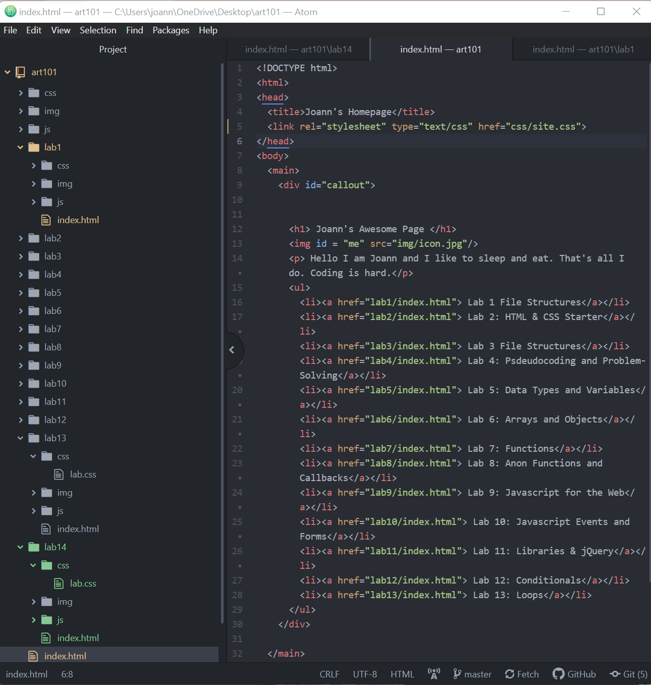
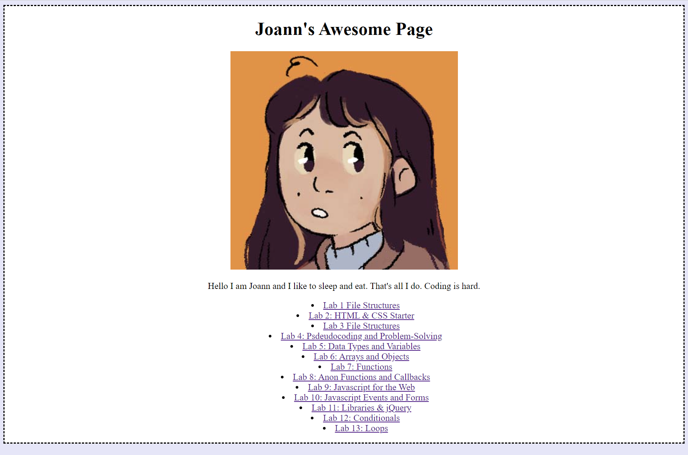

Lab 14: Debugging Tools and Strategies
Challenge
With a partner, use your debugging knowledge to fix old assignments
Problems
My pages all function how they're supposed to, so it was difficult finding issues to debug
Results
Below are screenshots of my homepage, which initially had problems connecting to the CSS stylesheet
Debugging
In my main index.html, it couldn't detect the site.css stylesheet. I mulled this over for a few weeks but I couldn't figure out what was wrong. Finally, I realized that the issue was that I didn't link the CSS properly by adding in href="css/lab.css" It was a really small issue, so it completely slipped my mind.
 